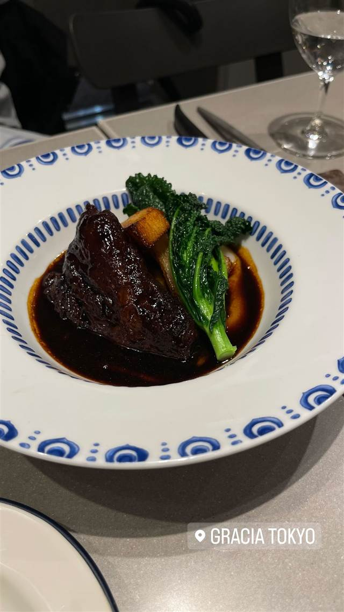
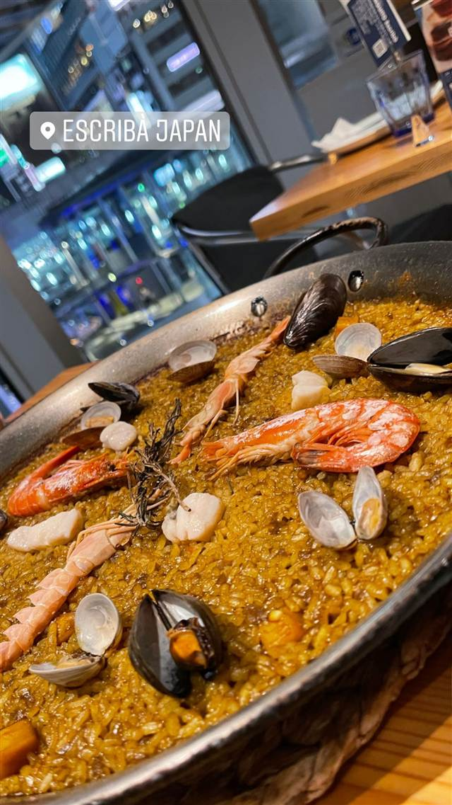
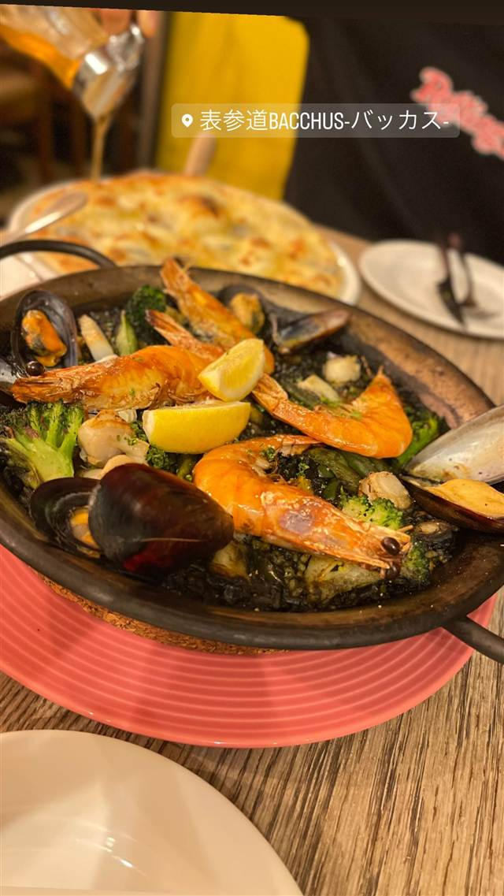

★ また行きたい
ボラーチョ
店名は「酔っぱらい」の意味、深夜3時までタンシチューが楽しめる
目黒区大橋2-6-18 ボラーチョ
目黒区大橋にある家族経営の洋食店。店名はスペイン語で「酔っぱらい」を意味し、タンシチューやイカ墨スパゲティーなど幅広いメニューを深夜3時まで楽しめる。
TRIVIA
豆知識
- 店名はスペイン語で「酔っぱらい」という意味
- 池尻大橋エリアで深夜3時まで営業する洋食屋
REVIEWS
世間の評判
昭和レトロな老舗洋食の人気メニュー
- アヒージョのにんにくオイルやグラタンなど定番メニューを評価する声がある
- 昭和レトロな店内の落ち着いた雰囲気と店員の対応が評価されている
ホットペッパー
| 看板 | タンシチュー、イカ墨スパゲティー、ボラーチョスープ、マッシュルームアヒージョ |
|---|---|
| こだわり | コロッケやグラタンなどの定番洋食から、じっくり煮込むタンシチューまで幅広いメニューを提供 |
| どこから | 都心 |
| 予算 | 夜 ¥5,000～¥5,999 |
| 定休日 | 月曜 |
| 予約 | 予約可 |
| 場所 | 池尻大橋 東京都目黒区大橋2-6-18 |
| メモ | 深夜3時まで営業。グルメ系ドラマの舞台にもなった |
食べたもの：マッシュルームアヒージョ
デートに向かない
NEARBY
近い店・同じ系統の店
-
 ★
醤油・中華そば 池尻大橋駅
八雲（やくも）
骨を一切使わないのに深いコクの特製ワンタン麺
昼 ¥501～¥1,000 夜 ¥501～¥1,000
★
醤油・中華そば 池尻大橋駅
八雲（やくも）
骨を一切使わないのに深いコクの特製ワンタン麺
昼 ¥501～¥1,000 夜 ¥501～¥1,000
-
 ★
醤油・中華そば 池尻大橋駅
中華そば 千乃鶏
下北沢「千里眼」の系譜、夜限定の釜玉油そばも人気
昼 ¥1,000～¥1,999 夜 ¥1,000～¥1,999
★
醤油・中華そば 池尻大橋駅
中華そば 千乃鶏
下北沢「千里眼」の系譜、夜限定の釜玉油そばも人気
昼 ¥1,000～¥1,999 夜 ¥1,000～¥1,999
-
 コーヒー 中目黒・池尻大橋
スターバックス リザーブ ロースタリー東京
世界5番目・北米外初の旗艦店で隈研吾設計の17m銅製焙煎機がある
昼 ¥1,000～¥1,999 夜 ¥1,000～¥1,999
コーヒー 中目黒・池尻大橋
スターバックス リザーブ ロースタリー東京
世界5番目・北米外初の旗艦店で隈研吾設計の17m銅製焙煎機がある
昼 ¥1,000～¥1,999 夜 ¥1,000～¥1,999
-

スペイン料理 広尾 Gracia（グラシア） 三ツ星「サンパウ」出身シェフ監修、ビブグルマンのガストロバー 昼 ¥4,000～¥4,999 夜 ¥6,000～¥7,999 -

スペイン料理 渋谷 XIRINGUITO Escriba SHIBUYA（チリンギート エスクリバ） 直火のみで17分炊き上げるバルセロナ仕込みのパエリア 昼 ¥2,000～¥2,999 夜 ¥5,000～¥5,999 -

スペイン料理 表参道駅 表参道 BACCHUS -バッカス- 赤海老の旨みたっぷり、魚介パエリアが看板の地中海料理店 昼 ¥1,000～¥1,999 夜 ¥4,000～¥4,999
ONSEN & SAUNA